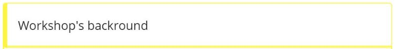
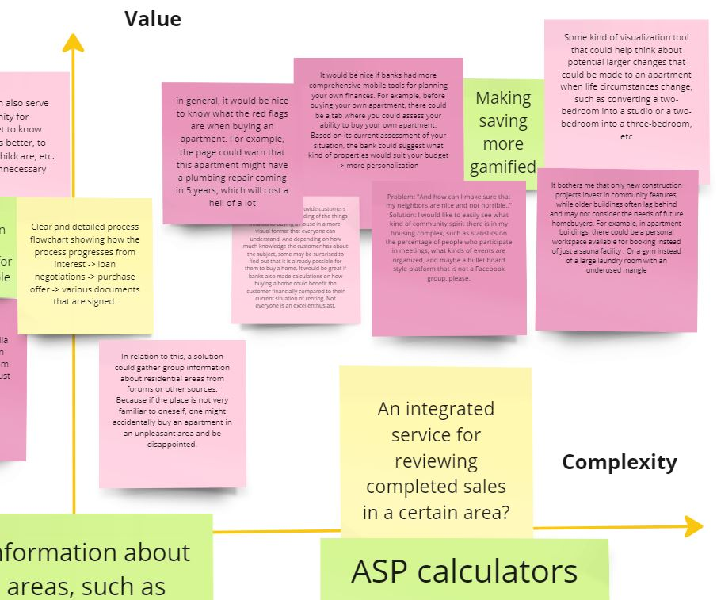

Conceptualization
Help for the first-time home buyers
Finding the right apartment can turn out to be extremely difficult and time-consuming. Several different factors must be taken into account, and there is no one-stop shop on the market where the buyer could find answers to all of their questions. Instead, they have to use several different services and websites in order to find answers.
As a firts-time home buyer I struggled with navigating through all of these services and websites. Since I had never bought an apartment before I was filled with questions and self-doubt. Have I taken everything into consideration? Am I forgetting something crusial here?
These questions fueled this conseptualization which aims to help first-time homebuyers by defining possibile digital solutions that could ease finding the right apartment. This conseptualization is meant to illustrate my workflow when it comes to user-centric desig. Even though the case is fictional real people actually took part in its workshops. So real users were involved and therefore the ideas presented here are not just an end product of my imagination.
Identifying problems
A small literature review was conducted to gain knowledge on the first-time homebuyers current situation in the apartment market in Finland. In addition online discussion platforms were consulted to study the difficulties people face while looking for an apartment. This information worked as a backround knowlege for the workshop.
Based on the identified problems in this research phase I planned a workshop to gain deeper understanding and potential solutions for the problems.
The main question the workshop wanted to answer was: How could young first-time home buyers be supported by using digital services when buying their first home? Based on the question a following criteria was set for finding the right experts for the workshop:
1. Buying an appartment is timely for the participant
This was a requirement since the participants needed to have personal experience on the subject.
2. The participant is a firts-time homebuyer
The reasoning behind this was similar to the first criteria. The participants had to be firts-time homebuyers to truly understand firs-time homebuyers situation.
3. The participant works in the IT-field
This was a requirement since in the end of the workshop the participants had to evaluate which of their ideas could be executed with current technology.
Workshop
I will present some highlights from the workshop, but to avoid information overload, not all workshop ideas are shown on this page. The workshop was conducted via Teams using Miro board. If you are interested in seeing the entire contents of the workshop, you can go and view it in Miro.
The workshop had four phases. Below I will shortly describe each phase and present some of the ideas gathered during the workshop.

The current state part included three question cathegories found from the backround research. The participants where asked to go through each cathegory and fill in all the additional questions or thoughts they have on that cathegory. Below you can see the questions and how the participants answered them. In the final question the participants could also add new questions if they were not covered in other categories.

During this step the participants created ideas first individually for 15 minutes and after that the ideas were shared and discussed. The goal for every participant was to reach 100 ideas. The reasoning behind this was that with such a high idea goal unexpected ideas could pop into participants' minds when they wouldn't have time to evaluate the ideas.
During this phase participants were asked to evaluate their solutions. I presented them a coordinate system where the x line represented how complex the implementation of the idea would be and the y line represented how much value the solution would bring to the user.

Findings and user personas
After the workshop I went through the ideas and started to cathegorise them. The cathegorization was meant to clarify what kind of service providers the digital solution needs behind it. Three main cathegories for the needed service providets were 1. Bank services, 2. Housing market services and 3. Other services. Each of these cathegories also had .
Three user personas were created based on the needs found during the workshop. This part helps understand the user needs even more deeply and keep their viewpoints in mind during the next phases.

Finally after pulling together these results and user personas I made suggestions for the digital solutions that could ease the problems and connect the solution ideas found in the workshop. This part was then presented to the participants and discussed together. Based on the discussions these were the final ideas.